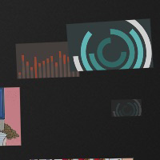

Child Marriage
An interactive visualization that looks at the 30 countries with the highest rates of child marriage. This page is an example of a site that uses the web to tell a story. by The Ford Foundation

Seven Digital Deadly Sins
This interactive collection allows users to participate in quick surveys and generates other users results. As a whole, users get a good sense of where they stand within the data and the topic itself. by The Guardian